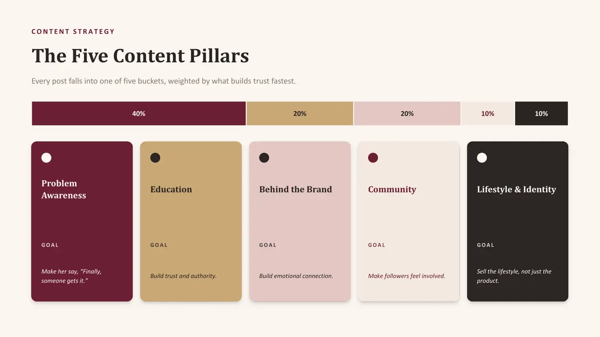
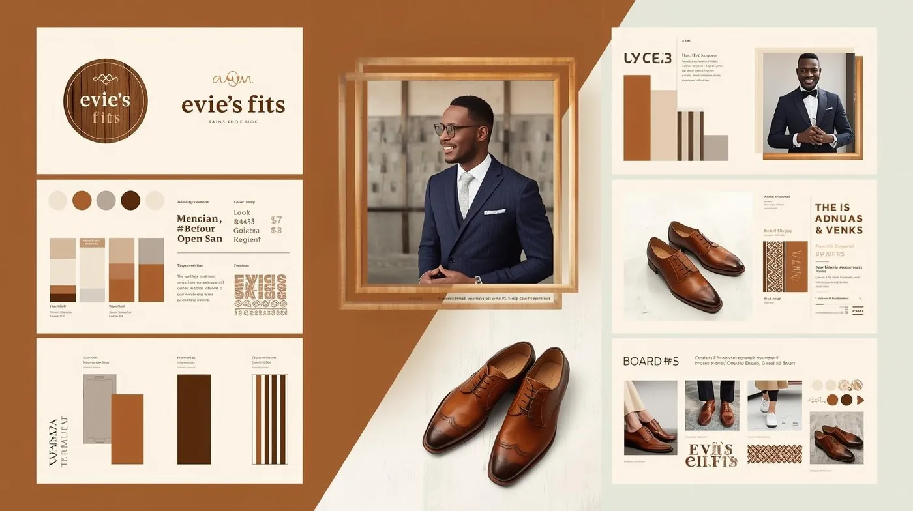
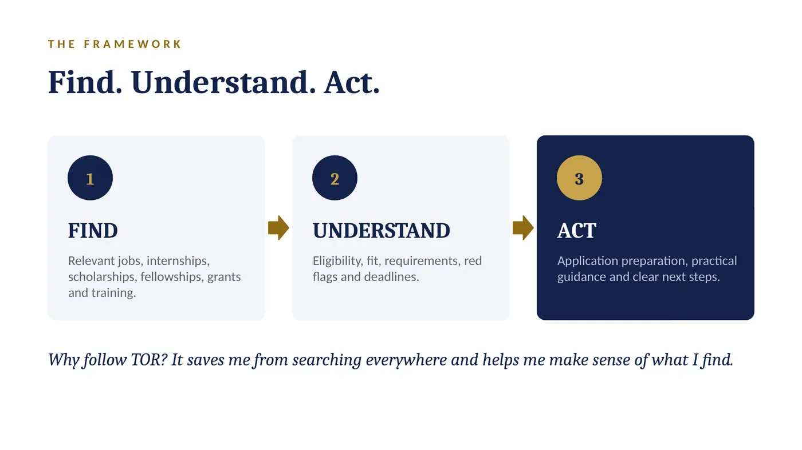
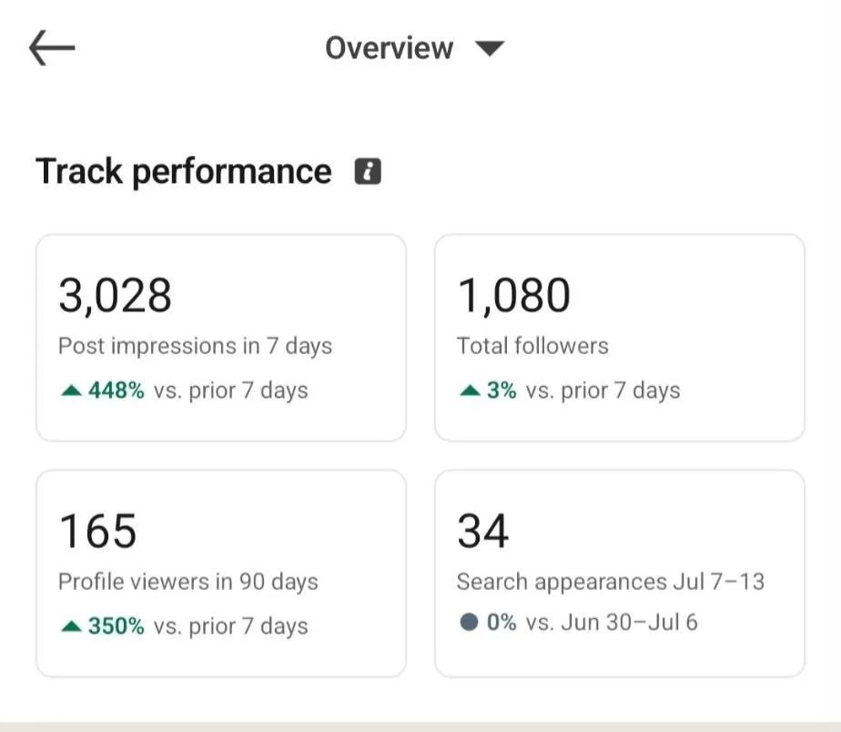
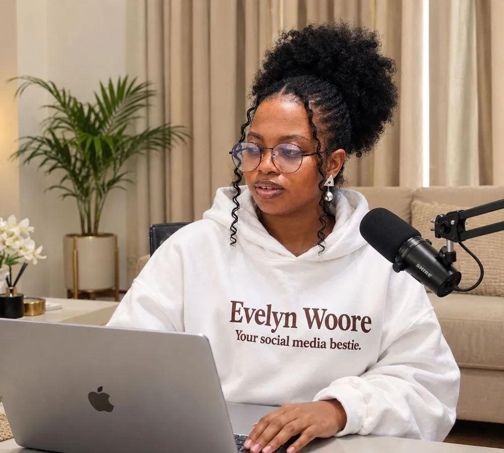
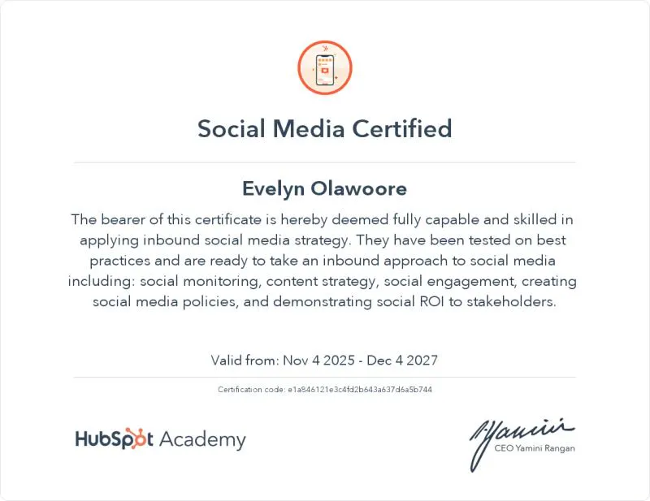
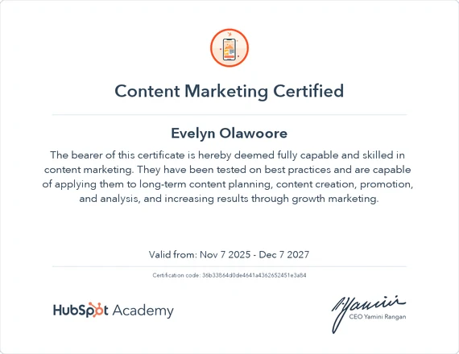
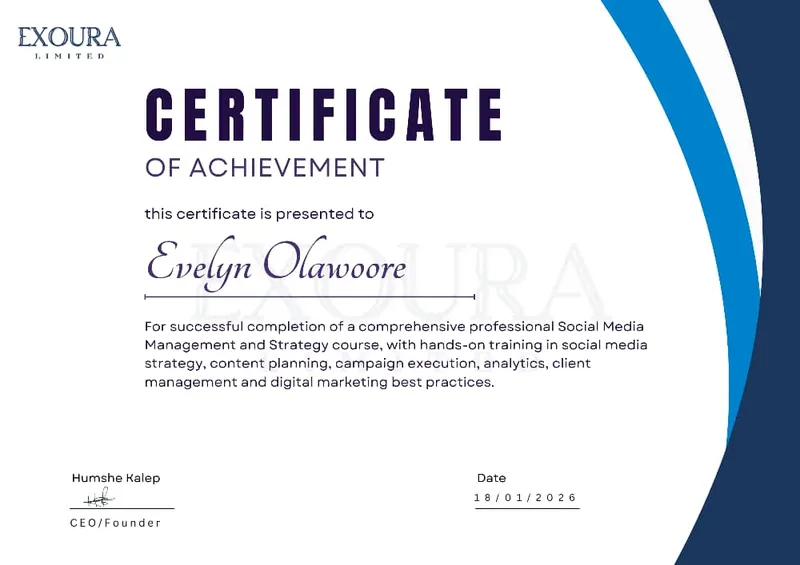

Social Media Management
Your pages stay active, on brand and answered, without you having to chase anyone.
- Content planning and direction
- Community management and engagement
- Scheduling and performance tracking
Portfolio 2026
Social Media Manager & LinkedIn Strategist
Content that earns attention. Strategy that drives results.
I help brands use social media on purpose. I look at the business and the audience first, then plan the content, then show up consistently.
Beyond the post
The bigger question is what that attention is doing for the business. Social media is about getting the right people to notice you, trust you and eventually choose you.
Case studies
A look at the strategy, thinking and execution behind the work.
01 · Prelaunch strategyA luxury nightwear brand for fuller bust women, getting ready to launch. A 25 page strategy: audit, five content pillars, a three month launch roadmap and the metrics that matter before sales exist.
View Case Study →
A footwear brand with 19 followers and irregular sales. I audited the page, chose a brand direction and built the content and social plan around one idea: be the style educator, not just the seller.
View Case Study →
A page that posted opportunities. I audited it and shifted the brand from announcing to explaining, with a content system, a 30 day calendar and a brand guide built on Find, Understand, Act.
View Case Study →
A Shopify designer and Klaviyo expert whose profile needed to speak to store owners. The work was about who the content attracts. One week later, post impressions went from 353 to 3,028.
View Case Study →
A Reel concept and a five slide carousel for a curated travel brand, built on the contrast between planning stress and being looked after.
View Project →Process
The brand, the audience and what the page is meant to achieve. I listen before I plan.
What is working, what is not and what needs to change. Competitors and profile audits go here.
Positioning, content pillars, a calendar and clear goals. Every post has a job.
Writing, design direction, scheduling, comments and community. Consistent, not noisy.
I look at what happened, keep what worked and adjust the rest.
Services
Your pages stay active, on brand and answered, without you having to chase anyone.
Your page or personal profile attracts the people you actually want to work with.
You know what to say, to whom, and why.
A clear read on what is working and what is quietly costing you attention.
Where it fits the work, I help make the brand easier to place and remember.

About
I plan content, research audiences and help brands stay consistent online. Most of the people I work with find social media confusing. I try to make it feel less like guessing and more like a plan.
Before anything goes up, I want to understand the brand, the audience and what the page is trying to achieve. Then I notice what is off, decide what to change and explain why. I keep things organised and I meet deadlines, so clients are not left chasing me.
I care about work that does something for the business, not just work that looks good on a feed.
Tools I work in: Canva, Notion, Buffer, CapCut, Pinterest and Meta.
Credentials
Three certifications that sit behind the projects above. Tap any certificate to enlarge it.

Social Media CertifiedHubSpot Academy. Valid Nov 4 2025 to Dec 4 2027.
Content Marketing CertifiedHubSpot Academy. Valid Nov 7 2025 to Dec 7 2027.
Social Media Management and StrategyExoura Limited. Certificate of achievement, 18 January 2026.Contact
If you need someone who can bring strategy, thoughtful content and consistent execution to your social presence, let's talk.